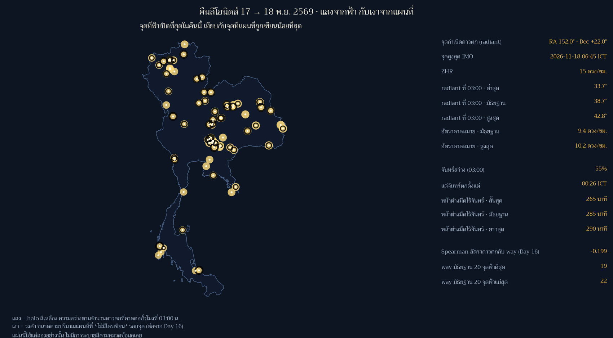
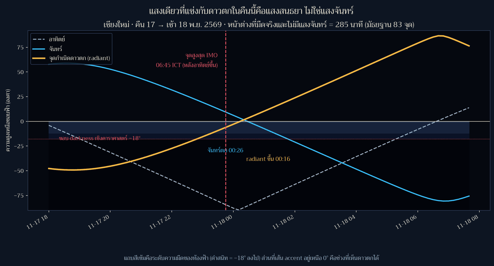
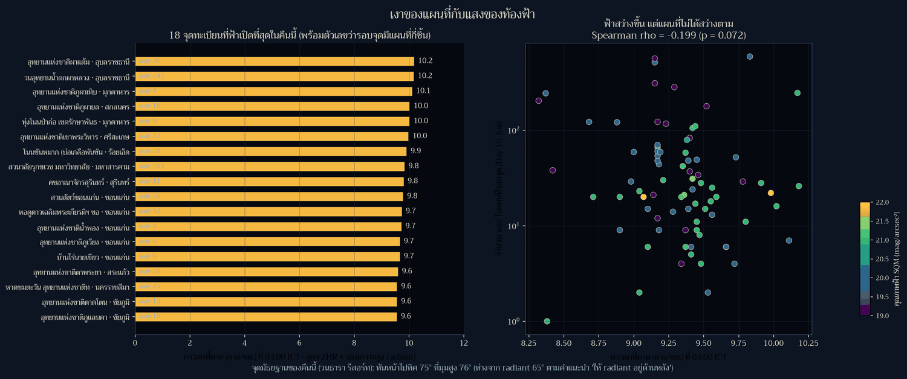

Day 17 · Light & dark — คืนลีโอนิดส์ 17 → 18 พ.ย. 2569: แสงจากฟ้ากับเงาของแผนที่ วัดด้วยสูตรเดียวว่า ZHR × sin(ความสูง radiant)

โจทย์ทางการวันนี้คือ “Play with visual effects. What can you map with just light and shadows?” (หัวข้อ Light & dark — ดึงข้อความมาจากหน้า 30daymapchallenge.com อ่านสดวันที่ 17 พ.ย.)
เป็นวันที่โจทย์กับปฏิทินตรงกันพอดี: คืนนี้ (17 ต่อเช้ามืด 18 พ.ย.) คือคืนที่ฝนดาวตกกลุ่มลีโอนิดส์ ถึงจุดสูงสุด ตามปฏิทินของ IMO ผมจึงไม่ต้องใส่อะไรปลอมขึ้นเลย — ใช้แสงจริงของคืนนี้ สองแหล่ง (ดาวตกกับสนธยา) และเงาจริงแหล่งเดียว (แผนที่รอบจุดที่ ไม่มีใครเขียน ต่อจาก Day 16)
ที่มาของแผนที่
ค่าคงที่ดาราศาสตร์ทั้งหมดมาจาก IMO Meteor Shower Calendar 2026 (ไฟล์ PDF ที่ดาวน์โหลด มาแตกข้อความใน session นี้) ไม่ใช่จากความจำ
| ค่า | ตัวเลข |
|---|---|
| กลุ่มดาวตก | 013 LEO (Leonids) · active 6–30 พ.ย. |
| จุดสูงสุด | 17 พ.ย. 23:45 UT = 18 พ.ย. 06:45 ICT (nodal crossing λ☉ = 235.27°) |
| ZHR | 15 ดวง/ชม. |
| จุดกำเนิดดาวตก (radiant) | RA 152° · Dec +22° |
| ความเร็วเข้าบรรยากาศ | 71 กม./ชม. · ต้นทางคือดาวหาง 55P/Tempel–Tuttle |
Dec +22° คือหัวใจของไทยในคืนนี้ เพราะจุดสูงสุดของ radiant = 90 − |ละติจูด − 22| ที่พะเยา = 87° เกือบเหนือศีรษะ — ไทยอยู่ในตำแหน่งที่ ดีที่สุดในโลกแห่งหนึ่ง สำหรับลีโอนิดส์ แต่ peak ตรงกับ 06:45 ซึ่ง หลังอาทิตย์ขึ้นแล้ว ประเทศไทยจึงเห็นเฉพาะช่วงไต่ขึ้นสู่จุดสูงสุด
สูตรที่ใช้ (ประกาศเป็นสมมติฐานไว้ชัด ๆ): จำนวนดาวตกที่คาด = ZHR × sin(ความสูง radiant) เป็นการแก้ first-order ที่ใช้กันทั่วไป ไม่คิด limiting magnitude ไม่คิดเมฆ ไม่คิด extinction
ผลลัพธ์
๑. แสงกับเงาของคืนนี้

| ตัวเลขที่ 03:00 ICT ของเช้าวันที่ 18 พ.ย. | ค่า |
|---|---|
| ความสูง radiant · ต่ำสุด / มัธยฐาน / สูงสุด | 33.7° / 38.7° / 42.8° |
| อัตราดาวตกที่คาด · ต่ำสุด / มัธยฐาน / สูงสุด | 8.3 / 9.4 / 10.2 ดวง/ชม. |
| หน้าต่างที่มืดจริง และ ไม่มีจันทร์ และ radiant อยู่เหนือขอบฟ้า | 265 / 285 / 290 นาที |
| จุดที่หน้าต่างเป็น 0 นาที | 0 จุด (ทั้ง 83 จุดดูได้) |
จุดที่ดีที่สุดคือ อุทยานแห่งชาติผาแต้ม (อุบลราชธานี) radiant 42.8° ให้อัตราคาด 10.18 ดวง/ชม. จุดที่ต่ำสุดคือ ดาราควิซีน (ภูเก็ต) 8.32 ดวง/ชม. — ต่างกันเพียง 1.2 เท่า เพราะสิ่งที่กำหนดเกมไม่ใช่ตำแหน่งจุด แต่คือ เวลา ที่คุณดู
๒. เส้นแสงของคืน: แสงที่แข่งกับดาวตกคือสนธยา ไม่ใช่จันทร์

คืนที่เชียงใหม่ (17 พ.ย. 18:00 → 18 พ.ย. 08:00 ICT): จันทร์ (สว่าง 54.7% elongation 95.4°) ยังอยู่สูง 63° ตอน 18:00 แล้ว ตกประมาณ 00:26 ICT ในขณะที่ radiant ขึ้นราว 00:16 ICT และ darkness เชิงดาราศาสตร์สิ้นสุด (อาทิตย์ขึ้น) 05:04 → 06:18 ICT
แปลว่าช่วง 02:00–05:00 เป็นหน้าต่างที่จันทร์อยู่ใต้ขอบฟ้าแล้วและฟ้ามืดสนิท ส่วนที่แสงจันทร์จะกวนคือช่วงหัวค่ำ ซึ่ง radiant ยังไม่ขึ้น — สองช่วงนี้ไม่ทับกันเลย ข้อความที่แชร์กันมาว่า “ปีนี้มีจันทร์กวน” จึง ถูกครึ่งเดียว: จันทร์สว่างจริง แต่ตกก่อนเวลาที่ดี
ตรวจเทียบแบบจำลองกับตารางที่เผยแพร่ (นี่คือส่วนที่ผมอยากให้ดู เพราะมันโชว์ความแม่นของเครื่องมือ)
| เหตุการณ์ | คำนวณเอง | เผยแพร่ (Bangkok) | ต่าง |
|---|---|---|---|
| อาทิตย์ขึ้น 18 พ.ย. | 06:18 ICT | 06:19 ICT | −1.0 นาที |
| จันทร์ตก 17 → 18 พ.ย. | 00:26 ICT | 23:19 ICT | +67.0 นาที |
ephemeris ของผม (Meeus series ที่ตัดพจน์) แม่นระดับนาทีสำหรับอาทิตย์ แต่เพี้ยนราวหนึ่งชั่วโมงสำหรับจันทร์ ข้อสรุป “ไม่มีแสงจันทร์ช่วง 02:00–05:00” ยังอยู่ได้ เพราะต่อให้เลื่อนไป 1 ชม. จันทร์ก็ยังตกก่อนหน้านั้น แต่ผมไม่ใช้ค่าจันทร์ที่คำนวณได้อ้างอะไรที่ ก้ำกึ่ง เช่น “ตั้งกล้องตอน 00:30 ได้เลย”
๓. เงา: ที่ไหนฟ้าเปิด ที่นั่นแผนที่บาง

ต่อจาก Day 16 ที่วัดว่ารอบจุดทะเบียนแต่ละจุดมี way ใน OpenStreetMap กี่ชิ้น:
- สัมพันธ์อันดับระหว่าง อัตราดาวตกที่คาดกับจำนวน way ที่ถูกเขียน = Spearman rho = −0.199 (p = 0.072) ทิศทางถูก (ฟ้าดีกว่า ↔︎ แผนที่บางกว่า) แต่ ยังไม่ถึงระดับที่มีนัยสำคัญ ผมจึงไม่พูดว่า “พิสูจน์แล้ว”
- way มัธยฐานของกลุ่มฟ้าดี 20 อันดับแรก = 19 ชิ้น เทียบกลุ่มอันดับล่าง 20 = 22 ชิ้น ต่างกันน้อยมาก
- ใน 15 จุดอันดับแรก มี ทุ่งโนนป่าก่อ (มุกดาหาร) ที่ way = 0 และ อุทยานแห่งชาติน้ำพอง way = 4 ขณะที่ สวนวลัยรุกขเวช ม.มหาสารคาม มี way 589 ชิ้น แต่ radiant ต่ำกว่า (41.0°)
- สิ่งที่ มี นัยสำคัญคือ SQM กับอัตราคาดหมาย rho = 0.243 (p = 0.027) — แต่ผมอ่านมันเป็น confound ทางภูมิศาสตร์ ไม่ใช่ causation: radiant สูงทางตะวันออก และจุดทะเบียนตะวันออก ในทะเบียนนี้มี SQM ดีกว่าด้วย จึงไปด้วยกันโดยไม่เกี่ยวกับว่าใครทำอะไร
สรุปตรง ๆ: คืนนี้ที่คุณอยู่ในไทย คุณดูได้ดีเกือบเท่ากันหมด (8.3–10.2 ดวง/ชม.) สิ่งที่ต่างกันคือ แผนที่รอบตัวคุณ บางแห่งมี 0 ชิ้น บางแห่งมี 589 ชิ้น
๔. หันหน้าไปทางไหน (แปลงคำแนะนำเป็นตัวเลข)
BBC สัมภาษณ์ ริชาร์ด มอยส์เซิล (ESA) ไว้ว่าให้ เอา radiant ไว้ด้านหลัง แล้วนอนมองขึ้นฟ้า ผมแปลงคำแนะนำนั้นเป็นจุดที่วาดได้: บนวงกลมใหญ่ที่ลากจาก radiant ไปทาง zenith เอาจุดที่ห่างจาก radiant 65° (มุมนี้เป็นค่านิยมทั่วไป ไม่ใช่ค่าที่วัดจากข้อมูล — ป้ายไว้เป็นสมมติฐาน)
ที่จุดมัธยฐานของคืนนี้ (วนธารา รีสอร์ท พิษณุโลก) เวลา 03:00 ICT ได้ทิศ 75° (ตะวันออก–ตะวันออกเฉียงเหนือ) มุมสูง 76.4° — คือเกือบเหนือศีรษะค่อนไปทางตะวันออก ซึ่ง ตรงข้าม กับข้อความที่แชร์กันว่า “มองไปทางทิศตะวันออก–ตะวันออกเฉียงเหนือ ใกล้ขอบฟ้า” เพราะ radiant ขึ้นมาสูงแล้วตั้งแต่ตีสาม
วิธีทำแบบย่อ
tools/astro17.py— ephemeris (LST, อาทิตย์, จันทร์ Meeus series ที่ตัดพจน์) + ฟังก์ชันหาเวลาขึ้น/ตก โดยหา sign change ของความสูง (step 1 นาที)- ตรวจเทียบ ephemeris กับเวลาที่เผยแพร่ (อาทิตย์ต่าง 1 นาที · จันทร์ต่าง 67 นาที — บันทึกทั้งสองค่า)
- ต่อทะเบียน 83 จุดกับ
day16_sites_osm.csv(way/users) และsky_quality_sqmจากทะเบียน - ทุกจุด: คำนวณความสูง radiant / จันทร์ / อาทิตย์ ที่ 03:00 ICT, อัตราคาดหมาย, นับนาทีของหน้าต่าง (มืด −18° + จันทร์ใต้ขอบฟ้า + radiant เหนือขอบฟ้า) ทุก 5 นาที
- จุดที่ควรหันหน้าไป จาก spherical geometry (RA/Dec → alt/az) ที่ 03:00 ICT
- วาด 3 ภาพด้วยแสง/เงาเท่านั้น (halo = แสง · วงดำ = เงาของแผนที่) แล้วเขียน artifact
- ตรวจ:
guard_bbox·guard_crs·guard_variance· assert ว่าจันทร์ต่ำกว่าขอบฟ้าทุกจุดที่ 03:00 · assert ว่าอาทิตย์ต่ำกว่า −18° ทุกจุดที่ 03:00 · assert ว่าอัตรา ≤ ZHR ·lint_thai+ สแกน unicode
ข้อจำกัดที่ต้องบอกตรง ๆ
- peak อยู่หลังอาทิตย์ขึ้น — 06:45 ICT คือช่วงที่ ซีกโลกตรงข้าม เห็นของจริง ไทยเห็นเฉพาะทางขึ้น
- ไม่มีข้อมูลเมฆเลย — อัตราที่คาดเป็นค่าทางฟิสิกส์ล้วน คืนที่ฟ้าปิดได้ 0 ดวงทุกจุด สูตรนี้ไม่บอกอะไรเกี่ยวกับสภาพอากาศเลย
- แบบจำลองจันทร์เพี้ยน 67 นาที (ตารางที่เผยแพร่ 23:19 vs คำนวณ 00:26) ผมใช้มันเฉพาะข้อสรุป ที่ไม่ก้ำกึ่ง และรายงานค่าที่เผยแพร่ไว้ข้างเคียง
- มุม 65° เป็นสมมติฐาน ไม่ใช่ค่าที่วัด — ถ้าใช้ 45° หรือ 90° ทิศที่แนะนำจะเลื่อนไป ผมเก็บ
look_az_0300/look_alt_0300ทุกจุดไว้ใน CSV เพื่อให้ท่านคำนวณมุมอื่นเองได้ - SQM ในทะเบียนบันทึกเป็นจำนวนเต็ม (19 / 20 / 21 / 22) การเปรียบเทียบระหว่างจุดจึงหยาบ และค่ามัธยฐาน 20.0 มีจุดซ้อนกันจำนวนมาก
- การ join กับ Day 11 ล้มเหลว —
day11_hex_quadrants.geojsonไม่มีฟิลด์cellให้จับคู่ ได้ matched = 0 ผมจึง ไม่ได้ใช้ ตัวเลข noise_km ใด ๆ ในโพสต์นี้ (บันทึกไว้เป็นหลักฐานว่าลองแล้วไม่ผ่าน) - rho = −0.199 (p = 0.072) ไม่ใช่ข้อสรุป ผมรายงานทิศทางและขนาดผลพร้อม p-value ไม่ได้เลือกพูดเฉพาะฝั่งที่เข้าเรื่องเล่า
ไฟล์ประกอบ
- day17_light_dark.png — แผ่นหลัก: แสงจากฟ้า (halo) กับเงาจากแผนที่ (วงดำ)
- day17_night_curve.png — เส้นความสูงของอาทิตย์/จันทร์/radiant ตลอดคืน พร้อมแถบสนธยา
- day17_ranking.png — 18 จุดฟ้าเปิดที่สุด + สัมพันธ์กับปริมาณแผนที่ (Day 16)
- day17_leonids_sites.csv — ทุกจุด: มุม radiant, อัตราคาด, นาทีหน้าต่าง, ทิศที่หัน, SQM, way
- day17_stats.json — ค่าคงที่ IMO, ผลตรวจเทียบ ephemeris,
assumptions,metric_definitions


บทเรียน
- “visual effect” ที่ซื่อสัตย์ที่สุด คือ effect ที่มาจากข้อมูล — halo กับวงดำในแผ่นนี้ไม่ได้ตั้ง ค่าความสวยงามเอง ขนาดของมันคือ
ZHR × sin(h)กับจำนวน way ที่วัดเมื่อวาน ภาพจึง เป็น ข้อสรุป ไม่ได้ ตกแต่ง ข้อสรุป - ตรวจ ephemeris ก่อนเชื่อมัน — ถ้าผมไม่เทียบกับตารางที่เผยแพร่ จะไม่มีทางรู้ว่าแบบจำลองจันทร์ เพี้ยนหนึ่งชั่วโมง เพราะมันให้เลขที่ “ดูสมเหตุสมผล” ทุกตัว และข้อสรุปใหญ่ (จันทร์ไม่กวนช่วงก่อนสว่าง) ยังรอดได้ทั้งที่ตัวเลขผิด → ข้อสรุปที่รอดจากข้อผิดพลาดขนาดใหญ่ ไม่ใช่หลักฐานว่าโมเดลแม่น
- อย่าให้ภูมิศาสตร์ปลอมเป็น causation — SQM กับอัตราดาวตกสัมพันธ์กัน p = 0.027 ฟังดูสวย แต่เป็นเพราะ radiant สูงทางตะวันออกและจุดทะเบียนตะวันออกฟ้ามืดกว่า ผมเลยเขียนไว้เป็น confound ถ้าวันไหนมีคนเอาไปอ้างอิง จะได้รู้ว่าผมรู้อยู่แล้ว
- ข้อความที่แชร์กันมักผิดที่รายละเอียด ไม่ใช่ที่สาระ — “10–15 ดวง/ชม.” ถูก, “หลังเที่ยงคืนถึงก่อนสว่าง” ถูก, “มองใกล้ขอบฟ้าทิศตะวันออก–ตะวันออกเฉียงเหนือ” ผิดสำหรับตีสามในไทย (radiant ขึ้นไป 76° แล้ว) แผนที่ที่ดีแก้ได้แค่ข้อสุดท้าย ก็คุ้มแล้ว